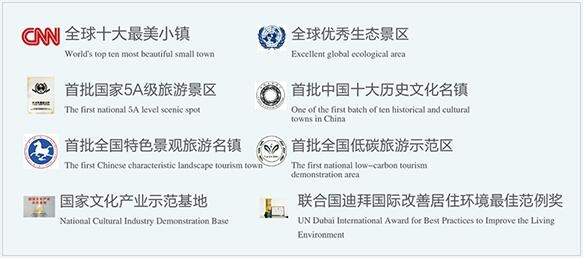

周庄简介 周庄景点搜索： 周庄在全世界享有"中国第一水乡"的美誉，被联合国教科文组织列入世界文化遗产预备清单，是首批中国历史文化名镇、首批国家AAAAA级旅游景区、首批全国特色景观名镇，入选美国CNN"全球十大最美小镇"，并获得联合国"全球  地理气候 周庄元代时属苏州府长洲县。元朝中叶，颇有传奇色彩的江南富豪沈万三之父沈佑，由湖州南浔迁徙至周庄东面的东宅村（元末又迁至银子浜附近），因经商而逐步发迹，使贞丰里出现了繁荣景象，形成了南北市河两岸以富安桥为中心的旧集镇。 明代，镇廓扩大，向西发展至后港街福洪桥和中市街普庆桥一带，并迁肆于后港街。明代中期属松江府华亭县。 清初，周庄复归长洲县，居民更加稠密。西栅一带渐成列肆，商业中心又从后港街迁至中市街。
|